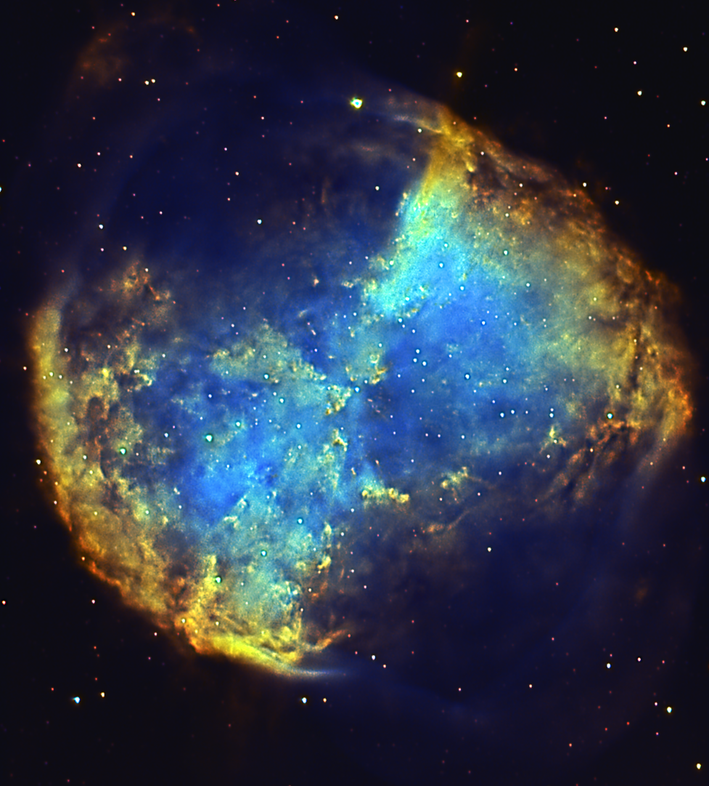
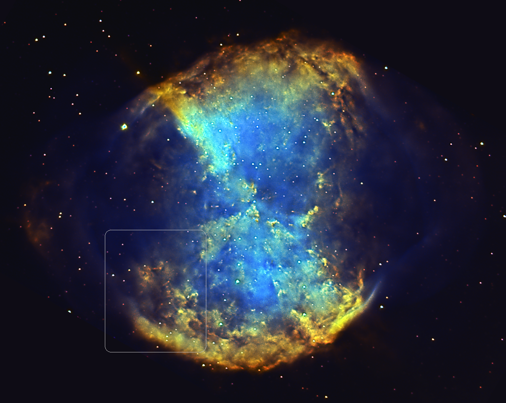
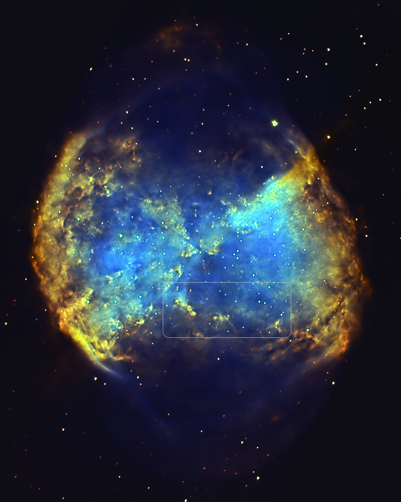
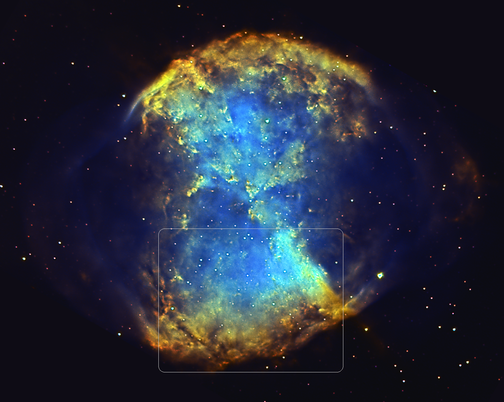
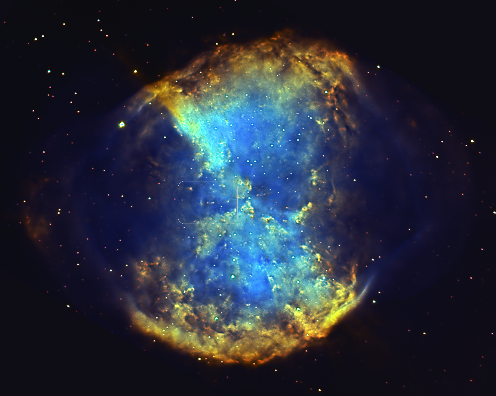
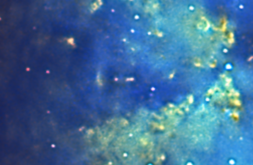
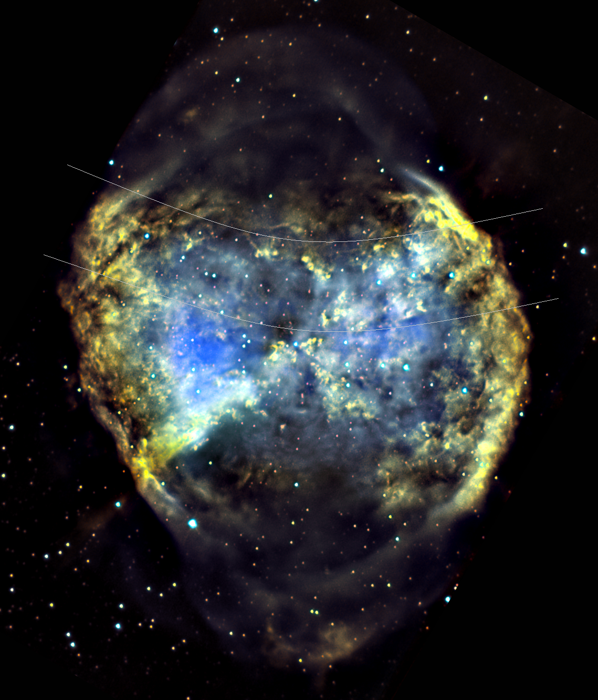
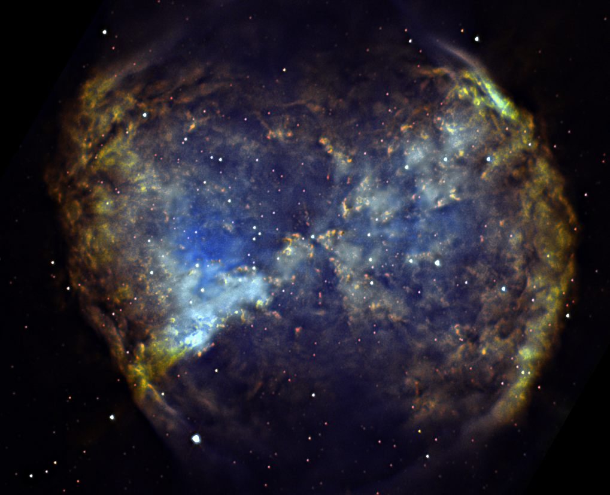
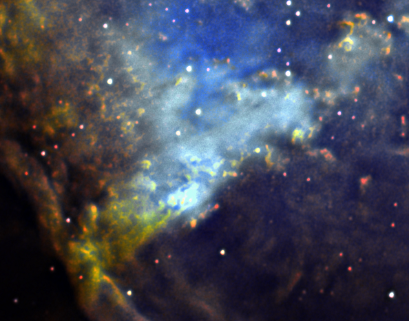
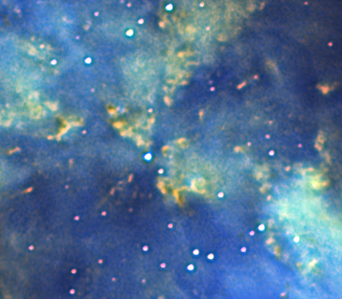

|
POZNAĆ i ZROZUMIEĆ M27
Mgławica planetarna M27 (messier 27) jest największą i najjaśniejszą mgławicą planetarną na naszym niebie, a mimo to, co najdziwniejsze, istnieje bardzo mało amatorskich zdjęć tej mgławicy pokazujących ją w naprawdę dużej skali obrazowania i z naprawdę drobnym detalem. Co jeszcze dziwniejsze, nawet sposób opracowania zdjęć profesjonalnych obserwatoriów skupia się bardziej na ogólnej mozaice jej elementów i bardziej przypomina witraże, niż wydobywa ukryte detale, te o których prawi niniejsze opracowanie. Typowy przykład tego, o czym piszę TU i TU a teleskopy idące rozmiarem w metry.
. Struktury mgławicy planetarnej Messier 27 . moja analiza zagadnienia z wykorzystaniem zdjęć mojego autorstwa 26-04-2020 Poniższe zdjęcia powstały przy użyciu samodzielnie zbudowanego Teleskopu Newton 320/1500, prowadzonego za ruchem nieba przy użyciu samodzielnie zbudowanego Montażu, oraz Kamerki ZWO ASI 290MM-C. Za ich pomocą, przez wiele miesięcy, polując na optymalne warunki, fotografowałem mgławicę przez filtry Ha 7nm (filtr przepuszczający pasmo wodoru) i OIII 8nm (filtr przepuszczający pasmo tlenu), gdyż w tych pasmach mgławica świeci najjaśniej i są one najciekawsze. Dla potrzeb niniejszej prezentacji zdjęcie musiało zostać obrobione w widoczny poniżej szczególnie kontrastowy sposób. Może kogoś dziwić degradacja gwiazd i niektórych elementów mgławicy, ale czy od astronomów pokazujących zdjęcia egzoplanet, oczekuje się pięknego obrazka gwiazdy w okół której one krążą? Autor takiego opracowania nie może skupiać się na wydobywaniu interesującego go detalu, a jednocześnie być ograniczanym troską o to, co nieistotne, mam nadzieję, że to rozumiecie :) Wszystko, co zobaczycie poniżej, to przenikanie graficzne pasmami Ha i OIII, przeplatanie kanałów RGB, dokonane zabiegi miały na celu wydobycie ciekawych elementów budowy mgławicy. No to zaczynamy... |
|
Zdjęcie wyjściowe poniżej, mocne i ostre, wiem, ale myślę, że oswoicie się z nim w dalszej analizie, a może nawet polubicie :)  ale... obróćmy mgławicę... by Ją "podawać" w ćwiartkach, będzie wygodniej :) no to lecimy w "rozbieranie" na części...  powyżej - obróbka ujawniła intrygujące struktury wyłaniające się z ciemnego pyłu, mają kolor czerwony, gdyż pyły stłumiły pozostałą część pasma powyżej - ściana niczym rafa w morzu powyżej - niczym wieża, wspinają się różne struktury, ależ tam musi być ciekawie... ooobracamy :) powyżej - ciemne struktury niczym mgła, miejscami gdzieś coś przebija...  powyżej - a z niej na szczycie wyłaniają się kolejne struktury ooobracamy :)  powyżej - znane już wszystkim chętnie fotografowane węzły (knots) M27 ooobracamy :)  powyżej - przeciwległy ciemny kwartał ooobracamy :)  ciekawy obiekt, przypomina samolot przekraczający barierę dźwięku  A poniżej inna forma wizualizacji z innego przeplatania się Ha i OIII, robi cię ciekawie... ...gdyż ujawnia nam niedostrzegane na innych opracowaniach struktury, jasną falbanę...  ...choć jak się przyjrzeć, struktura jest jeszcze większa, a to był tylko jej brzeg. Nigdy, nigdzie (godzin spędzonych na szukaniu i zdjęć obejrzanych tej mgławicy nie zliczę) nie widziałem, aby ta struktura była ujawniona i opisana. I kolejne opracowanie poniżej  w ciekawy sposób ujawnia nam, co się dzieje w tym znanym z wielu zdjęć miejscu, udało nam się wniknąć i dostrzec kotłujące się wnętrzności rejonu  na koniec, dla uspokojenia oczu, układ klasyczny :)  ze znanym wężykiem (dolny lewy róg od gwiazdy centralnej) i cieniutkimi smugami idącymi od niej w prawą górną stronę, z których uchwycenia jestem dumny :)  Mgławica Messier 27, do dziś astronomowie próbują zgłębić jej nietypową budowę i kształt. Po obejrzeniu powyższego, na koniec jeszcze raz Was zachęcę do rzucenia okiem TU i TU, myślę, że już rozumiecie, co miałem na myśli na wstępie :) |